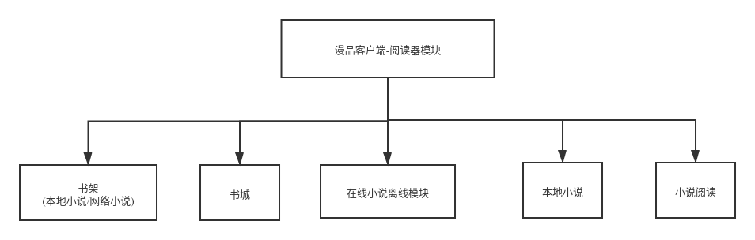

漫品客户端 全站开源 开源地址: https://github.com/AnyMarvel/ManPinAPP 欢迎start
漫品Android客户端分为3个板块
- 视频转漫画
- 免费小说阅读器
- 明信片
一. 视频转漫画
视频转漫画基于tensorflow训练目标识别库,对视频逐贞进行解析 基于opencv及3D神经网络,绘制漫画,进行排版
内置3000+种模板,可以随意下拉
二. 免费小说阅读器

免费小说阅读器,主打精简，UI精简但不失优雅，功能精简但不失体验，根据功能界面划分为：
- 书架模块：包含本地书籍，以及网络在线书籍。
- 书城：书城分为导航栏,推荐页及主页三部分数据,为保证APP的稳定性,这三部分都为动态加载模块,获取网络链接可用状态则展示当前网站链接内容,获取失败则更换,能够最大限度的保证在线阅读的可用性.最后以一个网站为数据来源，解析其主页数据，筛选以及封装数据以Android原生界面的形式展现出来。
- 网络小说离线功能：通过提前设置任务队列，通过Service后台获取章节数据。
- 本地小说：将手机本地的txt小说导入应用。
- 小说阅读模块。 本APP所有数据来源于第三方小说网站，不具备自身后台，通过JSoup对xml进行数据解析，来完成用户对小说内容的获取。
三. 明信片模块
明信片模块,比较有文艺气息的模块.根据功能界面划分为:
- 模板选择: 内置多种模板,提供用户选择
- 图片编辑: 丰富的图片编辑功能,包含磨皮,修改,动画等多种功能(C库全部开源)
- 明信片预览: 编辑好的明信片可进行预览和分享